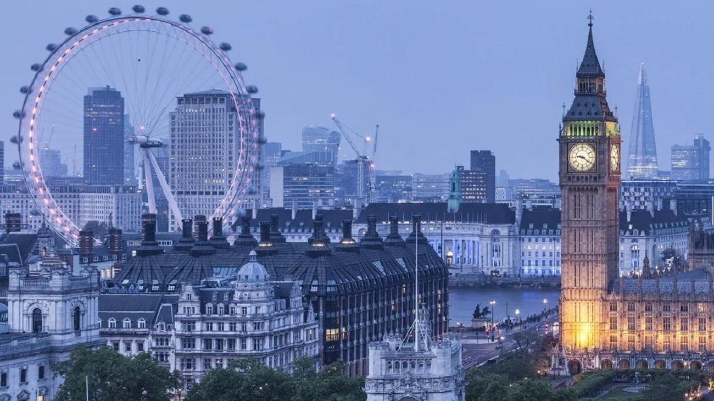
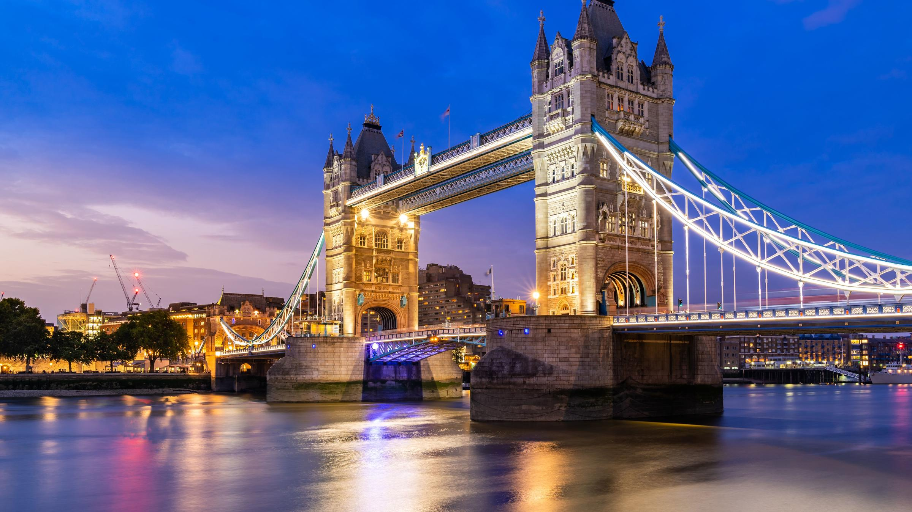
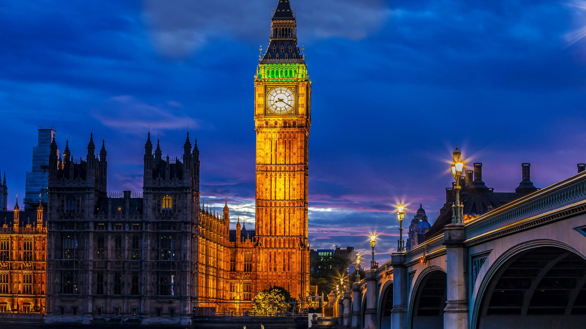

Лондон — столица и крупнейший город Великобритании, расположенный на реке Темзе на юго-востоке Англии. Это один из самых влиятельных городов мира в области финансов, культуры, образования и политики.
История Лондона насчитывает почти две тысячи лет. Город был основан римлянами около 43 года нашей эры под названием Лондиниум. На протяжении веков он пережил чуму, великий пожар 1666 года и бомбардировки Второй мировой войны, но каждый раз возрождался.
Среди главных достопримечательностей Лондона — Биг-Бен, Тауэрский мост, Букингемский дворец и Вестминстерское аббатство. Каждый год миллионы туристов приезжают, чтобы увидеть эти символы британской истории и культуры.
Лондон является домом для всемирно известных музеев: Британского музея, Национальной галереи и музея Виктории и Альберта. Большинство из них открыты для посещения бесплатно, что делает город особенно привлекательным для путешественников.
Транспортная система Лондона — одна из старейших в мире. Лондонское метро, известное как Underground или Tube, было открыто в 1863 году и сегодня включает 11 линий и более 270 станций, обслуживая миллионы пассажиров ежедневно.



Букингемский дворец служит официальной лондонской резиденцией британских монархов с 1837 года. Каждое утро у его ворот проходит церемония смены королевского караула, привлекающая тысячи зрителей.
Темза — главная река Лондона длиной около 346 километров. По ней курсируют речные автобусы, а набережные реки украшены историческими зданиями, современными небоскрёбами и знаменитым колесом обозрения London Eye.